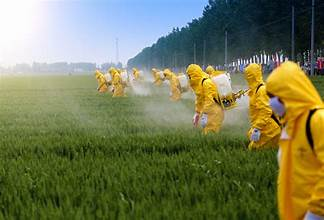

Early Blight Prevention and Pesticides
Welcome to our guide on early blight prevention and pesticides. Learn about effective methods to protect your
crops from early blight, a common potato disease.
Prevention:
- Crop Rotation: Rotate potato crops with non-related crops to reduce the buildup of the
pathogen in the soil.
- Resistant Varieties: Choose potato varieties that are resistant to early blight.
- Spacing: Plant potatoes with adequate spacing to promote air circulation, reducing
humidity.
- Pruning: Remove lower leaves showing signs of infection to limit the spread of the disease.
- Mulching: Apply organic mulch to prevent soil splashing onto lower leaves.
- Proper Irrigation: Use drip irrigation or water at the base of the plants to keep foliage
dry.
- Fungicide Application: Apply fungicides preventatively, especially during periods of high
humidity.
Pesticides:
- Copper-based Fungicides: Copper-based fungicides, such as
Bordeaux mixture or copper hydroxide, can be effective.
 Hover to zoom
Hover to zoom
- Mancozeb: Mancozeb is a broad-spectrum fungicide effective
against early blight.
 Hover to zoom
Hover to zoom
- Chlorothalonil: Chlorothalonil: Chlorothalonil is
commonly used to control early blight. Follow recommended application rates.
 Hover to zoom
Hover to zoom
- Fungicide Rotation: Rotate between different fungicides with different modes of action to
prevent resistance.
- Biological Controls: Some biopesticides, like those containing Bacillus subtilis, offer
environmentally friendly control.

Hover to zoom
Always follow specific recommendations on product labels and be mindful of safety precautions. Integrated Pest
Management (IPM) practices, combining various control methods, are often the most effective way to manage
diseases like early blight.
Explore our comprehensive guide and take proactive steps to protect your potato crops. Remember, a healthy crop
leads to a bountiful harvest!